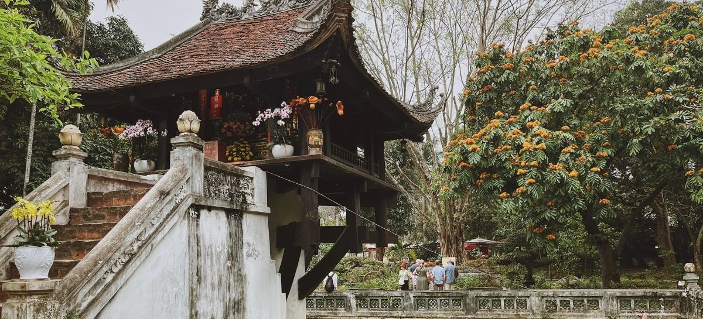
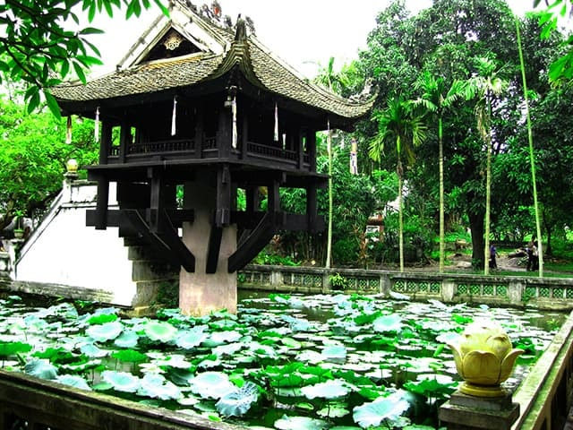
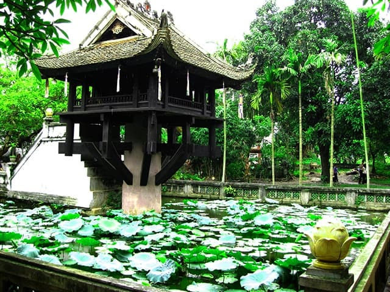

Địa danh CHÙA MỘT CỘT
Chùa Một Cột là một trong những công trình kiến trúc nổi bật và mang đậm giá trị lịch sử, văn hóa của thủ đô Hà Nội, Việt Nam. Chùa không chỉ thu hút du khách bởi vẻ đẹp độc đáo mà còn gắn liền với những câu chuyện huyền bí và tầm quan trọng trong lịch sử Phật giáo Việt Nam. Chùa Một Cột là một trong những công trình kiến trúc đặc biệt, mang đậm dấu ấn lịch sử và văn hóa của Hà Nội. Với vị trí đắc địa, cảnh quan thanh bình và giá trị lịch sử sâu sắc, nơi đây xứng đáng là một trong những biểu tượng quan trọng nhất của thủ đô, thu hút du khách và phật tử từ khắp nơi đến chiêm bái và tham quan. Chùa Một Cột có kiến trúc vô cùng độc đáo và đặc biệt, nổi bật giữa lòng thủ đô hiện đại. Chùa được thiết kế theo hình dáng một bông sen nở giữa hồ nước, tượng trưng cho sự thanh cao, tinh khiết và giác ngộ trong đạo Phật. Ngôi chùa được dựng trên một cột đá lớn, hình trụ, cao hơn 4 mét, đặt giữa một hồ vuông nhỏ có trồng sen và súng. Không gian xung quanh chùa yên bình, thoáng đãng với nhiều cây xanh cổ thụ, tạo cảm giác thanh tịnh, tách biệt với nhịp sống sôi động bên ngoài. Kiến trúc chùa tuy nhỏ bé nhưng hài hòa và mang đậm tính biểu tượng, thể hiện sự kết hợp tinh tế giữa nghệ thuật kiến trúc và triết lý Phật giáo.
 
